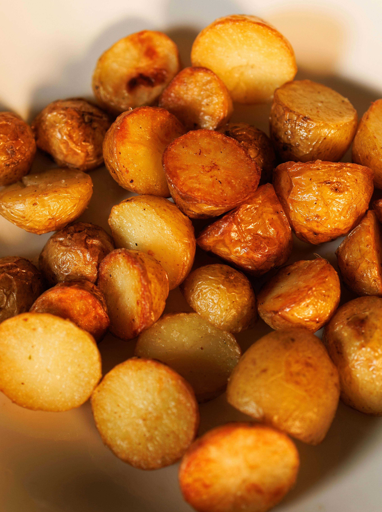

Easy Oven Roasted Potatoes
Home

Photo by Ellie Burgin on Pexels
Disclaimer: the potatoes in the picture are made from a different recipe.
Description
This recipe is easy to make and tastes delicious!
With it's simple seasoning and easy prep this dish is a wonderful side dish for almost any meat and potatoes dish.
Ingredients
- 6 small red potatoes, cleaned and cut into 1/2 to 1 inch cubes
- 1/4 cup olive oil
- 1 1/2 teaspoon salt
- 1/2 teaspoon garlic powder
- 1/4 teaspoon pepper
- 1/4 teaspoon onion powder
Directions
- In a large bowl, toss the potatoes with the oil and spices.
- Spray a shallow baking pan with cooking spray.
- Spread the potatoes in the bottom of the prepared pan.
- Bake at 450°F for 25-30 minutes, or until the potatoes are tender.
- Stir the potatoes once after about 15 minutes of baking so they brown on all sides.